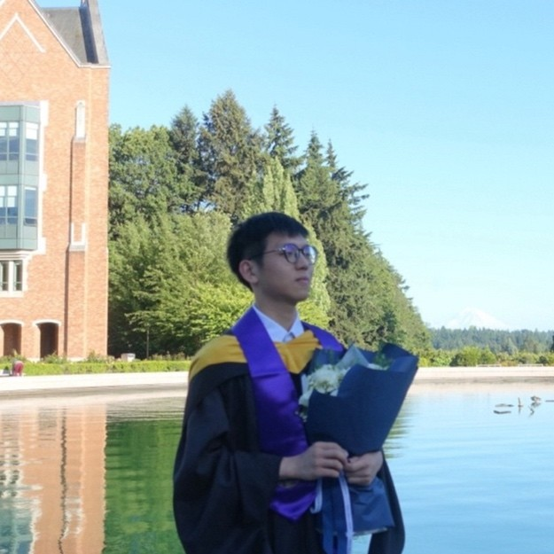

Yifei ZhaoPh.D. Student
Computer Science |
 |
Biography
I am a Ph.D. student in Computer Science at the University of Central Florida, co-advised by Prof. Mengxin Zheng and Prof. Qian Lou. My research focuses on secure and trustworthy AI systems, including coding and multi-agent systems, intellectual property protection for AI agents, LLM routing, and on-device model verification.
Education
-
University of Central Florida, Orlando, FL
Ph.D. in Computer Science, Aug 2024 - Present -
University of Washington, Seattle, WA
M.S. in Electrical and Computer Engineering, Sep 2023 - Jun 2024
Technical Skills
- Agent Frameworks: NVIDIA NeMo Agent Toolkit, AWS Strands Agents SDK, LangChain, AutoGen, CrewAI
- Agentic Systems: SWE-agent, multi-agent orchestration, LLM routing, sandboxed execution, MCP, RAG
- ML Systems: PyTorch, vLLM, llama.cpp
Research Publications
-
SIF: Semantically In-Distribution Fingerprints for Large Vision-Language ModelsTL;DR: Distilled decoding watermarks into natural visual queries for stealthy, robust black-box LVLM ownership verification.
-
AttestLLM: Efficient Attestation Framework for Billion-scale On-device LLMsTL;DR: Verified on-device LLM integrity through randomized, layer-wise watermark checks inside a TEE.
-
REALM: A Unified Red-Teaming Benchmark for Physical-World VLMs
 preprint, 2026TL;DR: Built an agentic target-generation pipeline that aligns heterogeneous physical-world VLM attacks through shared, scene-specific targets.
preprint, 2026TL;DR: Built an agentic target-generation pipeline that aligns heterogeneous physical-world VLM attacks through shared, scene-specific targets. -
PRO: Enabling Precise and Robust Text Watermark for Open-Source LLMspreprint, 2025TL;DR: Enabled open-source LLMs to natively generate watermarked text that remains detectable under downstream model modifications.
Project
-
AIDE-FHE: Autonomous Fully Homomorphic Encryption Challenge Solver (2026)Built an FHE coding-agent evaluation pipeline with execution-guided tree search over compiled and graded OpenFHE solutions.
Experience
-
University of Central Florida
Teaching Assistant - COP3402: System Software (Aug 2025 - Present)
Mentored 130+ students in C systems programming and compiler fundamentals.
Honors and Awards
- ORCGS Doctoral Fellowship, University of Central Florida, 2024